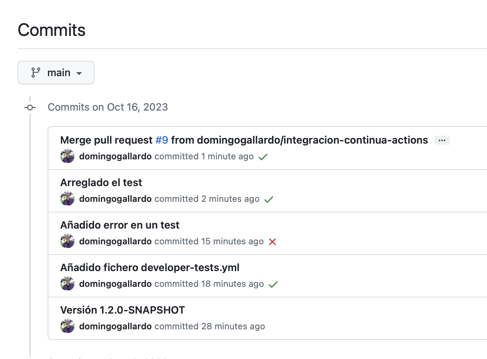
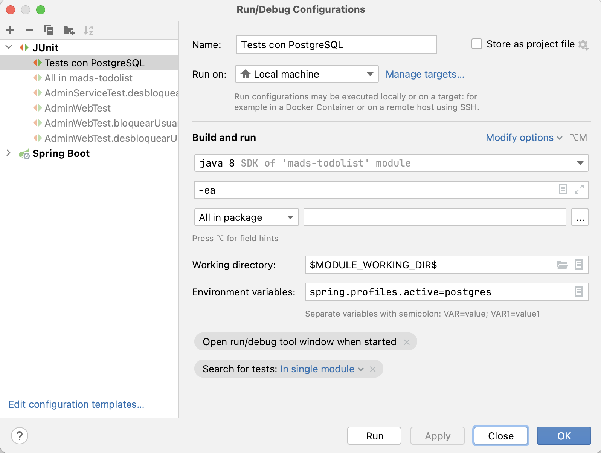
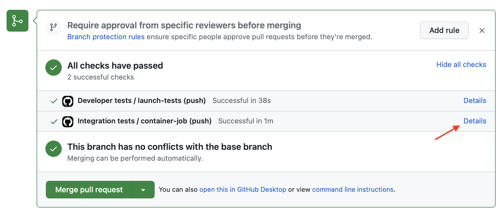

Práctica 3: Integración con GitHub Actions y TDD¶
En esta práctica 3 de la asignatura realizaremos dos tareas principales:
- Configuraremos un sistema de integración continua usando las actions del repositorio de GitHub. En este sistema se lanzarán los tests automáticamente en cada pull request. Después definiremos una nueva configuración del proyecto en la que se lanzarán los tests sobre la base de datos PostgreSQL.
- Añadiremos nuevas funcionalidades usando la práctica XP de TDD (Test Driven Design).
Importante
Lee con cuidado todo el enunciado y dedica especial atención a los
apartados con el título Pasos a seguir. Ahí están
especificadas las acciones que debes realizar en la práctica.
La duración de la práctica es de 3 semanas y la fecha límite de entrega es el día 8 de noviembre.
1. Desarrollo de la release 1.2.0¶
En esta práctica vamos a desarrollar la versión 1.2.0 de la aplicación
ToDoList. A todos los issues y pull requests les debes poner este
milestone, indicando que el objetivo es resolverlos y entregarlos en
esta release.
Pasos a seguir¶
- Cambia el número de versión (en el fichero Acerca De y en el
pom.xml) a1.2.0-SNAPSHOTpara indicar que lo que hay en main es la versión 1.2.0 en progreso. Esta versión la lanzaremos al final del desarrollo de la práctica, en su entrega.
2. Integración continua con GitHub Actions¶
GitHub Actions es un servicio de GitHub que permite realizar integración continua en su propia web, sin necesidad de configurar un servidor propio de integración continua.
Puedes consultar el funcionamiento de GitHub Actions leyendo su documentación, comenzando por las páginas Quickstart for GitHub Actions, Introduction to GitHub Actions y Building and testing Java with Maven.
En la práctica vamos a comenzar configurando GitHub Actions para que
todos los pull requests deban pasar los tests de integración antes
de realizar el merge con main.
Tests en los pull requests¶
Usando GitHub Actions es posible configurar el repositorio de GitHub para que todos los pull requests deban pasar los tests de integración en el servicio.
En la siguiente imagen vemos el aspecto en GitHub de un pull request
estando activa la integración con Actions. Una vez abierto el PR,
se lanzan los flujos de trabajo (workflows) definidos en
el directorio .github/workflows.
GitHub comprueba si la integración de main con la rama pasa los tests definidos en el workflow. Sólo si los tests pasan es posible realizar el merge del PR en main.

El fichero de configuración¶
Para configurar GitHub Actions basta con añadir un fichero de flujo de
trabajo en el directorio .github/workflows.
El fichero con el flujo de trabajo inicial lo llamaremos developer-tests.yml:
name: Tests
on: push
jobs:
# El nombre del job es launch-test
launch-tests:
runs-on: ubuntu-latest
# Todos los pasos se ejecutan en el contenedor openjda:8-jdk-alpine
container: openjdk:8-jdk-alpine
steps:
# Hacemos un checkout del código del repositorio
- uses: actions/checkout@v2
# Y lanzamos los tests
- name: Launch tests with Maven
run: ./mvnw test
Puntos interesantes a destacar:
- El nombre del flujo de trabajo es
Tests. - El nombre del job es
launch-tests. - Con la palabra clave
onse define el evento que causa que se lance el flujo de trabajo. Es en cualquier commit subido a GitHub (push). - En
jobsse definen los trabajos en paralelo a realizar por el flujo de trabajo. En nuestro caso sólo habrá uno. - En
runs-onse define la máquina base sobre la que se van a ejecutar los siguientes pasos del flujo. - En
containerse especifica el contenedor Docker que se va a usar para ejecutar los pasos del flujo de trabajo. - En
uses: actions/checkout@v2se especifica que se obtenga la versión 2 de la acción llamadaactions/checkout. Esta acción se descarga el repositorio en la máquina especificada anteriormente y lo deja listo para ejecutar los tests o cualquier otra acción. - Por último, con el comando
run: ./mvnw testse indica que el flujo de trabajo debe lanzar este comando, que es el que lanza los tests. - Los nombres
Testsylaunch-testsson nombres arbitrarios que indicamos y que después aparecen en la interfaz de Actions y nos sirven para localizar los distintos pasos.
Builds en Actions¶
En la pestaña Actions de GitHub tenemos toda la información de los
builds. Es posible visualizarla mientras que se está realizando el
build o cuando ya ha terminado. Allí podremos ver el detalle de la
ejecución de los tests y consultar la salida de los mismos para
comprobar su resultado.
En la siguiente imagen se ha capturado el build en ejecución. El color naranja significa que el proceso está en ejecución.

Pasos a seguir¶
-
Crea un issue llamado
Integración continua con GitHub Actions. Abre una ramaintegracion-continua-actionsy súbela a GitHub. -
Añade el fichero anterior
.github/workflows/developer-tests.yml. Haz un commit, súbelo a GitHub y abre un pull request con el nombre `Integración continua con GitHub Actions". -
Comprueba que se pasan los tests y que se marca como correcto el pull request.
-
Modifica un test para que falle y sube un nuevo commit. Recarga la página del pull request y comprueba que el commit aparece como erróneo en GitHub cuando el build falla. Pincha en el enlace details para comprobar la descripción del fallo.
-
Corrige el test que falla, vuelve a subir el commit y comprueba que el nuevo commit y el PR pasan correctamente.
-
Cierra el pull request, mezclándolo con
main. Se volverán a lanzar los tests en GitHub y el commit aparecerá marcado como correcto.En el listado de commits de la rama
mainaparecerá junto a cada commit el indicador de si en ese commit los tests han pasado correctamente o no.
-
Baja los cambios al repositorio local y borra la rama.
$ (integracion-continua-actions) git checkout main $ (main) git pull $ (main) git branch -d integracion-continua-actions $ (main) git remote prune origin
3. Configuración de la aplicación para usar una BD PostgreSQL¶
Hasta ahora hemos trabajado con la aplicación en una configuración local con nuestro ordenador de desarrollo trabajando sobre una base de datos H2 en memoria. Pero el objetivo final es poner la aplicación en producción, en un servidor en Internet y usando una base de datos PostgreSQL en producción.
Además, te habrás dado cuenta de que es muy engorroso probar la aplicación con la base de datos de memoria. Tienes que volver a introducir todos los datos de prueba cada vez que paramos y ponemos en marcha la aplicación.
En esta práctica vamos a ver cómo configurar la aplicación para poder trabajar con una base datos PostgreSQL, tanto en su ejecución como en los tests.
Para configurar la aplicación vamos a utilizar los denominados perfiles. Definiremos, además del perfil base, un perfil adicional para lanzar la aplicación y los tests usando la base de datos PostgreSQL.
La configuración de tests con base de datos PostgreSQL la utilizaremos para ejecutar los tests de integración sobre la base de datos PostgreSQL en el proceso de integración continua de GitHub Actions.
Para lanzar un servidor de base de datos PostgreSQL usaremos Docker, de forma que no tendremos que realizar ninguna instalación en nuestro ordenador.

Ficheros de configuración de la aplicación¶
Ya hemos comentado que la configuración de la aplicación se define en
el fichero application.properties. Ahí se definen distintas
propiedades de la ejecución de la aplicación que se pueden modificar
(puerto en el que se lanza la aplicación, base de datos con la que
conectarse, etc.).
Tenemos dos ficheros application.properties: uno en el directorio
src/main/resources que define la configuración de ejecución y otro
en el directorio src/test/resources que define la configuración que
se carga cuando se lanzan los tests.
Spring Boot permite definir ficheros de configuración adicionales
que pueden sobreescribir y añadir propiedades a las definidas en el
fichero de configuración por defecto. El nombre de estos ficheros de
configuración debe ser application-xxx.properties donde xxx define
el nombre del perfil. En nuestro caso definiremos los ficheros
application-postgres.properties (uno en el directorio main y otro
en test) para definir las configuraciones de ejecución y de test con
PostgreSQL.
Estos ficheros de configuración adicionales se cargan (cuando se lanza la
aplicación con el perfil específico) después de cargar la configuración por
defecto definida en application.properties. Recordemos que en este perfil por
defecto se define el perfil como perfil activo dev:
# Activamos el perfil dev
spring.profiles.active=dev
Cuando se lance un perfil específico, el perfil activo ya no será ese, sino el especificado por el perfil específico.
Pasos a seguir¶
-
Crea un nuevo issue llamado
Añadir perfiles y permitir trabajar con PostgreSQL. Crea una rama nueva (llámalaperfiles, por ejemplo) y abre un pull request.$ (main) git checkout -b perfiles $ (perfiles) git push -u origin perfiles -
Copia el siguiente fichero en
src/main/resources/application-postgres.properties:spring.datasource.url=jdbc:postgresql://localhost:5432/mads spring.datasource.username=mads spring.datasource.password=mads spring.jpa.properties.hibernate.dialect = org.hibernate.dialect.PostgreSQL9DialectEste va a ser el perfil que activemos para utilizar la conexión con la BD PostgreSQL.
En este fichero de configuración se define la URL de conexión a la base de datos
mads, su usuario (mads) y contraseña (mads) y el dialecto que se va a utilizar para trabajar desde JPA con la base de datos (org.hibernate.dialect.PostgreSQL9Dialect). La base de datos PostgreSQL debe estar funcionando en el puerto5432dellocalhost. -
Vamos ahora a añadir el perfil de test. Copia el siguiente fichero en
src/test/resources/application-postgres.properties:spring.datasource.url=jdbc:postgresql://localhost:5432/mads_test spring.datasource.username=mads spring.datasource.password=mads spring.jpa.properties.hibernate.dialect = org.hibernate.dialect.PostgreSQL9DialectEn este perfil la conexión se hace con una base de datos diferente:
mads_test, para no sobreescribir la base de datos definida en el perfil de ejecución.Recuerda que en el perfil por defecto
resources/application.propertiesse define el valor despring.jpa.hibernate.ddl-autocomocreate. De esta forma la base de datos se inicializa antes de cargar los datos de los tests y de ejecutarlos. También usamos una base de datos distinta (mads_test) para no sobreescribir la base de datos definida en el perfil de ejecución. -
Añade la siguiente dependencia en el fichero
pom.xmlpara que se descargue el driverpostgresql:42.2.22. También añade las líneas para poder especificar perfiles desde línea de comando. La variableprofilesse definirá desde línea de comando cuando se llame a Maven:Fichero
pom.xml:<artifactId>h2</artifactId> <scope>runtime</scope> </dependency> <dependency> <groupId>org.postgresql</groupId> <artifactId>postgresql</artifactId> <version>42.2.22</version> </dependency> <dependency> <groupId>org.springframework.boot</groupId> ... <plugin> <groupId>org.springframework.boot</groupId> <artifactId>spring-boot-maven-plugin</artifactId> <configuration> <profiles>${profiles}</profiles> </configuration> </plugin> -
Para lanzar la aplicación necesitarás un servidor PostgreSQL en el puerto 5432 con el usuario
mads, la contraseñamadsy la base de datosmads. Es muy sencillo descargarlo y ejecutarlo si tienes instalado Docker. Ejecuta desde el terminal un comandodocker runpara poner en marcha la imagenposgres:13:docker run -d -p 5432:5432 --name postgres-develop -e POSTGRES_USER=mads -e POSTGRES_PASSWORD=mads -e POSTGRES_DB=mads postgres:13Docker se descarga la imagen
postgres:13y lanza el contenedor (una instancia en marcha de una imagen) conectado al puerto 5432 (no debe estar ocupado) y sobre la base de datosmads. Le da como nombrepostgres-develop.Puedes ejecutar los siguientes comandos de Docker:
$ docker container ls -a (comprueba todos los contenedores en marcha) $ docker container stop <nombre o id de contenedor> (para un contenedor) $ docker container start <nombre o id de contenedor> (pone en marcha un contenedor) $ docker container logs <mombre o id de contenedor> (muestra logs del contenedor) $ docker container rm nombre o id de contenedor> (elimina un contenedor) -
Arranca la aplicación con el siguiente comando:
./mvnw spring-boot:run -D profiles=postgresSe activará el perfil
postgresy se cargarán las preferencias desrc/main/resource/application.propertiesysrc/main/resource/application-postgres.properties.Cuidado si tienes otro postgres funcionando
Si tienes instalado el servicio de postgres para otras asignaturas la aplicación dará un error al lanzarse, porque se intentará conectar al puerto 5432 y ahí no estará nuestra base de datos, sino la base de datos de la otra asignatura. Asegúrate de detener el servicio de postgres que tengas instalado en tu ordenador antes de lanzar el comando
docker runque pone en marcha nuestra imagen de posgres.Al lanzarse la aplicación con el perfil activo
postgresno se ejecutará el servicioInitDbServiceque añade datos por defecto en la aplicación. Ahora ya no tiene sentido trabajar con datos por defecto porque los datos van a ser grabados en la base de datos real.Prueba a introducir datos en la aplicación y comprueba que se están guardando en la base de datos utilizando por ejemplo el panel
Databasede IntelliJ. Deberás añadir una Data Source de tipo PostgreSQL, configurando el usuario y contraseña de acceso amads:
Añade la conexión con la base de datos
madspulsando en el pequeño recuadro junto al nombre de la fuente de datos:
Y después ya podrás examinar la base de datos
mads, pulsando en la tabla que quieras y seleccionando con el botón derecho Edit Data:
-
Cierra la aplicación y vuelve a abrirla. Comprueba que los datos que se han creado en la ejecución anterior siguen estando.
Podemos también parar el contenedor y volverlo a reiniciar y los datos se conservarán. Al parar el contenedor no se eliminan los datos, sólo al borrarlo.
-
También podemos arrancar la aplicación con el perfil de postgres lanzando directamente el fichero JAR de la siguiente forma:
$ ./mvnw package $ java -Dspring.profiles.active=postgres -jar target/*.jarPara lanzar la aplicación desde IntelliJ trabajando con el nuevo perfil podemos seleccionar la opción
Edit Configurations...del menú de configuraciones, duplicar la configuraciónApplication, renombrándola porApplication PostgreSQLy añadir en el campoActive profilesel nombre del perfil nuevo que acabamos de crearpostgres.
-
Cierra la aplicación. Paramos el contenedor con la base de datos de desarrollo haciendo
docker container stop postgres-develop:$ docker container ls -a CONTAINER ID IMAGE ... NAME 520fee61d51e posgres:13 ... postgres-develop $ docker container stop postgres-developAdemás de por línea de comando, también es posible gestionar los contenedores usando la aplicación Docker Desktop que se encuentra en la propia instalación de Docker.
-
Vamos ahora a ver cómo lanzar los tests sobre una base de datos PostgreSQL. Lanzamos ahora otro contenedor con la base de datos de test (
mads_test):docker run -d -p 5432:5432 --name postgres-test -e POSTGRES_USER=mads -e POSTGRES_PASSWORD=mads -e POSTGRES_DB=mads_test postgres:13Y lanzamos los tests usando el perfil
postgrescon la base de datos PostgreSQL con el siguiente comando:./mvnw -D spring.profiles.active=postgres test -
Podemos lanzar también los tests desde IntelliJ editando la configuración de lanzamiento de test y añadiendo la variable de entorno
spring.profiles.active=postgres. Podríamos, por ejemplo, llamar a esta configuraciónTests con PostgreSQL.
Recargar las dependencias Maven
Si la ejecución de los tests desde IntelliJ produce un error prueba a recargar las dependencias en el panel de Maven.
-
Dado que las configuraciones de test y de ejecución utilizan distintas bases de datos, debemos tener en funcionamiento la base de datos correspondiente a lo que queremos hacer en cada momento. Esto es muy fácil usando los contenedores de Docker. Por ejemplo, podemos parar el contenedor PostgreSQL con la base de datos de test y arrancar el contenedor con la base de datos de desarrollo:
$ docker container ls -a $ docker container stop postgres-test $ docker container start postgres-develop -
Realiza un commit con los cambios, súbelos a la rama y cierra el pull request para integrarlo en
main:$ (perfiles) git add . $ (perfiles) git commit -m "Añadidos perfiles para trabajar con PostgreSQL" $ (perfiles) git push // Mezclamos el Pull Request en GitHub $ (perfiles) git checkout main $ (main) git pull $ (main) git branch -d perfiles $ (main) git remote prune origin
4. Tests de integración en GitHub Actions¶
Vamos a modificar la configuración de GitHub Actions para conseguir un sistema de integración continua que ejecute los tests de integración usando la base de datos real PostgreSQL.
La ejecución de los tests usando la base de datos de memoria H2 será responsabilidad del desarrollador y se hará en el entorno de trabajo local, tal y como se ha hecho desde la primera práctica.
Tests del desarrollador vs. tests de integración¶
Podemos considerar los tests que usan la base de datos real como tests de integración y los tests que usan la base de datos en memoria como tests del desarrollador.
No usamos el nombre de tests unitarios de forma consciente, para evitar conflictos con la nomenclatura. Cuando hablamos de tests del desarrollador nos referimos a tests que van a ejecutar continuamente los desarrolladores en su equipo local cuando están trabajando con la aplicación y añadiendo funcionalidades. Son tests rápidos, que se pueden lanzar desde el propio IDE, y que deben ser ejecutados antes de cada commit.
Frente a estos tests, los tests de integración necesitan una configuración adicional (poner en marcha la base de datos de test en nuestro caso) y se ejecutan menos frecuentemente.
Vamos a actualizar GitHub Actions para que se lancen allí los tests que usan la base de datos PostgreSQL y nos ahorremos el trabajo de realizarlos en local.
Seguiremos lanzando en local los tests que usan la BD de memoria mientras hacemos el desarrollo.
Dejaremos también en GitHub Actions los tests que usan la BD de memoria. Quizás sean redundantes con los que usan la BD de Postgres, pero su ejecución no cuesta demasiado y no está de más lanzarlos también. Podríamos prescindir de ellos si en algún momento comprobamos que el tiempo de ejecución de los tests en GitHub se hace muy largo.
Acción para lanzar los tests con la BD postgres¶
Para lanzar los tests de integración en GitHub debemos modificar el fichero de configuración del flujo de trabajo para que lance un contenedor de PostgreSQL y después se ejecuten los tests sobre ese contenedor.
Para tener más flexibilidad en la configuración de la conexión con PostgreSQL vamos a modificar el perfil de Spring Boot, añadiendo unas variables con unos valores por defecto que se pueden modificar definiendo su valor en variables de entorno con el mismo nombre.
En concreto, definimos las variables POSTGRES_HOST, POSTGRES_PORT,
DB_USER y DB_PASSWD.
POSTGRES_HOST=localhost
POSTGRES_PORT=5432
DB_USER=mads
DB_PASSWD=mads
spring.datasource.url=jdbc:postgresql://${POSTGRES_HOST}:${POSTGRES_PORT}/mads_test
spring.datasource.username=${DB_USER}
spring.datasource.password=${DB_PASSWD}
spring.jpa.properties.hibernate.dialect = org.hibernate.dialect.PostgreSQL9Dialect
Ya podemos añadir un nuevo fichero de flujo de trabajo. Lo llamamos integration-tests.yml
name: Integration tests
on: push
jobs:
container-job:
runs-on: ubuntu-latest
container: openjdk:8-jdk-alpine
services:
# Etiqueta usada para acceder al contenedor del servicio
postgres:
# Imagen Docker Hub
image: postgres:13
# Variables para arrancar PostgreSQL
env:
POSTGRES_USER: mads
POSTGRES_PASSWORD: mads
POSTGRES_DB: mads_test
# Definimos chequeos para esperar hasta que postgres ya ha comenzado
options: >-
--health-cmd pg_isready
--health-interval 10s
--health-timeout 5s
--health-retries 5
steps:
- uses: actions/checkout@v2
- name: Launch tests with Maven
run: ./mvnw test -D spring.profiles.active=postgres
env:
POSTGRES_HOST: postgres
-
Se especifica el servicio
postgresque se va a usar en el flujo de trabajo. Para configurar este servicio se define la imagen docker (postgres:13) y las variables de entorno que se van a proporcionar al arrancar, para configurar la base de datos (usuario, contraseña y base de datos). Estamos definiendo un contenedor docker similar al que hemos usado con los tests cuando hicimos la prueba en local. -
El nuevo comando de test activa el perfil
postgres. Es el mismo comando que usamos cuando hicimos la prueba en local. -
En la última línea se actualiza el parámetro
POSTGRES_HOSTpara que la conexión se realice con el hostpostgresque es el que nombre que se ha definido en el servicio.
Pasos a seguir¶
-
Crea un nuevo issue llamado
Tests de integración en GitHub Actions. Crea la ramaintegracion-gh-actions.$ git checkout -b integracion-gh-actions $ git push -u origin integracion-gh-actions -
Modifica el fichero del perfil postgres de test tal y como se indica anteriormente, para usar variables de configuración que puedan ser definidas mediante variables de entorno.
-
Comprueba que siguen funcionando los tests lanzados sobre la base de datos usando los valores por defecto de las variables de entorno.
// Nos aseguramos de que la base de datos que está en marcha // es la de test $ docker container ls CONTAINER ID IMAGE PORTS NAMES 411d8f2ea46c postgres:13 0.0.0.0:5432->5432/tcp postgres-test ./mvnw -D spring.profiles.active=postgres test -
Comprueba que podemos modificar los parámetros definidos en las variables de entorno. Por ejemplo, si se cambia el nombre del host de la conexión con la base de datos los tests deben de fallar:
$ ./mvnw -D spring.profiles.active=postgres -D POSTGRES_HOST=postgres test // Aparecerán errores debidos a que no se puede conectar con el // host postgres: org.postgresql.util.PSQLException: El intento de conexión falló. ... Caused by: java.net.UnknownHostException: postgresPulsa CTRL-C para detener la ejecución de los tests que fallan.
-
Crea un commit, súbelo a GitHub y crea el Pull Request
$ git add . $ git commit -m "Añadidas variables al perfil de test postgres" $ git push -
Añade el fichero
.github/workflows/integration-tests.ymlcon el flujo de trabajo de la acción de GitHub visto anteriormente.Modifica también el nombre de la acción definida en el fichero
devoloper-tests.ymlpara que seaDeveloper tests.Haz un commit, súbelo a GitHub y comprueba que los tests de las dos acciones pasan correctamente y que la acción
Integration testsusa la base de datos postgres.


-
Una vez comprobado que funcionan los tests de integración en GitHub, mezclamos el pull request y lo descargamos a local. Comprobamos que también se lanzan los tests en el commit de merge en GitHub.
-
Con esto ya tenemos completado un sistema de integración continua y GitHub se encargará de ejecutar todos los tests en un modo de integración, usando la base de datos PostgreSQL.
5. TDD¶
En la segunda parte de la práctica desarrollaremos, usando TDD (Test Driven Design), una nueva feature de la aplicación: la posibilidad de definir definir equipos a los que puedan pertenecer los usuarios.
Descomponemos la feature en las siguientes historias de usuario.
- 008 Listado de equipos
- 009 Gestionar pertenencia al equipo
- 010 Gestión de equipos (opcional)
008 Listado de equipos: Como usuario podré consultar el listado de los equipos existentes y los participantes en cada uno de ellos para poder consultar la estructura de la empresa y los proyectos en marcha y comprobar si estoy en los equipos correctos.
009 Gestionar pertenencia al equipo: Como usuario podré crear nuevos equipos y añadirme y eliminarme de cualquiera de ellos para poder participar y dejar de participar en ellos.
010 Gestión de equipos (opcional): Como administrador podré cambiar el nombre y eliminar los equipos para adaptarlos a los proyectos y estructura de la empresa.
Vamos a hacer de forma guiada la primera historia y dejamos las siguientes para que las hagas por tu cuenta.
008 Listado de equipos¶
La descripción de la historia de usuario es la siguiente:
Listado de equipos
Como usuario podré consultar el listado de
los equipos existentes y los participantes en cada uno de ellos para
poder consultar la estructura de la empresa y los proyectos en marcha
y comprobar si estoy en los equipos correctos.
Detalles
* En el menú aparcerá una opción `Equipos` que llevará a un
listado con los nombres de todos los equipos existentes.
* El listado de equipos estará ordenado por orden alfabético.
* Pinchando en el enlace del nombre del equipo nos iremos a una
página con un listado de todos los usuarios que lo componen.
* Un usuario podrá pertenecer a más de un equipo.
Vamos a utilizar la técnica de TDD para construir la funcionalidad de dentro a fuera (desde el repository hasta el controller). Comenzaremos con tests que construyan la capa de modelo (clases de entidad y repository) y después pasaremos a tests que construyan la capa de servicio.
Por último, una vez implementados los métodos de servicios necesarios, deberás implementar (lo haremos sin tests) las vistas y controllers. Las vistas y controllers los probaremos de forma manual, sin tests automáticos.
Importante
Los controllers no deben implementar ningún código adicional, sólo llamar al método de servicio necesario. De esta forma nos aseguramos que todo el código importante para la funcionalidad está testeado y ha sido creado mediante TDD.
Probaremos los tests usando la base de datos de memoria y dejaremos que sea la acción de GitHub la que pruebe los tests con la base de datos Postgres.
Recuerda que los pasos seguir la técnica de TDD:
- Test: Primero debes escribir el test.
- Code: Después debes escribir el código que hace pasar el test (únicamente el código necesario, no puedes escribir código de más)
- Refactor: Y, si es necesario, realizar una refactorización del código (los tests deben seguir pasando después de la refactorización).
Deberás hacer un commit por cada fase Test-Code. Si haces refactorización deberás hacerlo en otro commit adicional.
Pasos a seguir¶
-
Crea la historia de usuario
008 Listado de equiposen el tablero Trello. -
Crea dos issues correspondientes a esta historia:
- Servicio y modelo listado de equipos.
- Vista y controller listado de equipos.
-
Crea una rama para desarrollar el primer issue (llámala
servicio-equipos, por ejemplo) y pásalo en el tablero aIn progress.$ git checkout -b servicio-equipos $ git push -u origin servicio-equipos
Este primer issue lo haremos de forma guiada usando TDD con los tests que enumeraremos a continuación. El otro issue lo deberás implementar por ti mismo.
Primer Test - Clase Equipo¶
El primer test es para crear la entidad Equipo. Por ahora sólo
creamos la clase Java, sin las anotaciones JPA. Un equipo
package madstodolist.repository;
import org.junit.jupiter.api.Test;
import org.springframework.boot.test.context.SpringBootTest;
import org.springframework.test.context.jdbc.Sql;
import static org.assertj.core.api.Assertions.assertThat;
@SpringBootTest
@Sql(scripts = "/clean-db.sql")
public class EquipoTest {
@Test
public void crearEquipo() {
Equipo equipo = new Equipo("Proyecto P1");
assertThat(equipo.getNombre()).isEqualTo("Proyecto P1");
}
}
Escribe el código necesario para que pase el test. No debes escribir código de más, sólo el código mínimo para que el test pase.
Haz un commit que contenga el test y el código y súbelo a la rama remota. Pon como descripción del commit el mismo título de esta sección: Primer test - Clase Equipo.
$ git add .
$ git commit -m "Primer test - Clase Equipo"
$ git push
Crea el pull request para comprobar que el test pasa correctamente cuando se ejecuta sobre la base de datos Postgres. Liga el pull request con el issue, para que cuando se mezcle el PR se cierre el issue.
Importante
Debes incluir en el commit tanto el código del test como el código que soluciona el test, de forma que el commit aparezca como correcto en GitHub.
Segundo test - Añadir y buscar equipo en la base de datos¶
Con el segundo test queremos conseguir que funcione JPA con la entidad
Equipo y que podamos usar una tabla de equipos en la base de datos,
en la que podamos guardar entidades equipo.
Para comprobar que la entidad se ha guardado correctamente, comprobaremos se ha actualizando su identificador y que podemos recuperarlo de la base de datos.
Lo hacemos añadiendo el test grabarYBuscarEquipo. Usaremos la
anotación @Transactional siempre que trabajemos con clases
repository. De esa forma nos aseguramos que todo el código del test
se ejecuta en la misma transacción. Cuando escribamos el código del
servicio también habrá que usar esta anotación en cada método, tal y
como se hace en las clases de servicio de Tarea y Usuario.
// ... Imports ya existentes
// Añadimos estos imports necesarios
import org.springframework.beans.factory.annotation.Autowired;
import org.springframework.transaction.annotation.Transactional;
@SpringBootTest
@Sql(scripts = "/clean-db.sql")
public class EquipoTest {
@Autowired
private EquipoRepository equipoRepository;
// ... Test ya existente
@Test
@Transactional
public void grabarYBuscarEquipo() {
// GIVEN
// Un equipo nuevo
Equipo equipo = new Equipo("Proyecto P1");
// Probamos el constructor vacío, necesario para que funcione JPA/Hibernate
Equipo equipo = new Equipo();
// Creamos ya el equipo nuevo
equipo = new Equipo("Proyecto P1");
// WHEN
// Salvamos el equipo en la base de datos
equipoRepository.save(equipo);
// THEN
// Su identificador se ha actualizado y lo podemos
// usar para recuperarlo de la base de datos
Long equipoId = equipo.getId();
assertThat(equipoId).isNotNull();
Equipo equipoDB = equipoRepository.findById(equipoId).orElse(null);
assertThat(equipoDB).isNotNull();
assertThat(equipoDB.getNombre()).isEqualTo("Proyecto P1");
}
}
Actualizamos también el fichero clean-db.sql para que se borre la
tabla equipos al final de cada test.
DELETE FROM tareas;
DELETE FROM equipos;
DELETE FROM usuarios;
Escribe el código necesario para pase el test y haz un commit con el nombre del apartado como descripción. Súbelo a GitHub y comprueba en el pull request que el test pasa correctamente en el entorno de integración.
$ git add .
$ git commit -m "Segundo test - Añadir y buscar equipo en la base de datos"
$ git push
Tercer test - Definición de igualdad entre equipos¶
Ahora que hemos introducido el id del equipo escribimos un test
para comprobar que dos equipos son iguales. Debes escribir el código
de los métodos equals y hashCode (necesario este último para que
funcione correctamente la comprobación de igualdades en las
colecciones).
Hacemos los tests para que el equals funcione de la siguiente forma:
Si alguno de los dos equipos no tiene
id(esnull), entonces se deben comparar sus nombres. Ahora bien, si los dos equipos tienenid, entonces se deben comparar esosid".
Puedes guiarte por la implementación de equals y hashCode en
Usuario.
@Test
public void comprobarIgualdadEquipos() {
// GIVEN
// Creamos tres equipos sin id, sólo con el nombre
Equipo equipo1 = new Equipo("Proyecto P1");
Equipo equipo2 = new Equipo("Proyecto P2");
Equipo equipo3 = new Equipo("Proyecto P2");
// THEN
// Comprobamos igualdad basada en el atributo nombre y que el
// hashCode es el mismo para dos equipos con igual nombre
assertThat(equipo1).isNotEqualTo(equipo2);
assertThat(equipo2).isEqualTo(equipo3);
assertThat(equipo2.hashCode()).isEqualTo(equipo3.hashCode());
// WHEN
// Añadimos identificadores y comprobamos igualdad por identificadores
equipo1.setId(1L);
equipo2.setId(1L);
equipo3.setId(2L);
// THEN
// Comprobamos igualdad basada en el atributo nombre
assertThat(equipo1).isEqualTo(equipo2);
assertThat(equipo2).isNotEqualTo(equipo3);
}
Escribe el código necesario para que pase el test y haz un commit.
Cuarto test - Relación muchos-a-muchos entre equipos y usuarios¶
Vamos ahora a diseñar un test que introduzca la relación entre equipos y usuarios. Debe ser una relación muchos-a-muchos: un equipo contiene muchos usuarios y un usuario puede pertenecer a 0, 1 o muchos equipos.
En el test hacemos varias cosas: creamos un equipo y un usuario, añadimos el usuario al equipo y comprobamos que las relaciones se han actualizado en la base de datos.
De la misma forma que en un test anterior, añadimos la anotación
@Transactional para que todas las llamadas a objetos repository se
hagan en la misma transacción y con la misma conexión a la base de
datos.
@Autowired
private UsuarioRepository usuarioRepository;
@Test
@Transactional
public void comprobarRelacionBaseDatos() {
// GIVEN
// Un equipo y un usuario en la BD
Equipo equipo = new Equipo("Proyecto 1");
equipoRepository.save(equipo);
Usuario usuario = new Usuario("user@ua");
usuarioRepository.save(usuario);
// WHEN
// Añadimos el usuario al equipo
equipo.addUsuario(usuario);
// THEN
// La relación entre usuario y equipo pqueda actualizada en BD
Equipo equipoBD = equipoRepository.findById(equipo.getId()).orElse(null);
Usuario usuarioBD = usuarioRepository.findById(usuario.getId()).orElse(null);
assertThat(equipo.getUsuarios()).hasSize(1);
assertThat(equipo.getUsuarios()).contains(usuario);
assertThat(usuario.getEquipos()).hasSize(1);
assertThat(usuario.getEquipos()).contains(equipo);
}
Para que este test funcione hay que crear la relación muchos-a-muchos
entre equipos y usuarios. Es necesario definir la anotación
@ManyToMany para indicar a JPA cómo construir las tablas en la base
de datos. Vamos a crear esta relación como LAZY, porque si fuera
EAGER la recuperación de equipos de la base de datos sería muy
costosa, traería a memoria todos sus usuarios (con sus tareas incluidas).
En Equipo.java definimos la tabla equipo_usuario en la que se va a
guardar la relación, e indicamos el papel de cada una de sus dos
columnas.
También creamos el getter para obtener los usuarios.
Y por último añadimos el método que actualiza ambos lados de la relación. El método debe añadir el usuario a la colección de usuarios del equipo y añadir el equipo a la colección de equipos del usuario.
// ... resto de imports
import java.util.Set;
import java.util.HashSet;
@Entity
@Table(name = "equipos")
public class Equipo implements Serializable {
// ...
private String nombre;
// Declaramos el tipo de recuperación como LAZY.
// No haría falta porque es el tipo por defecto en una
// relación a muchos.
// Al recuperar un equipo NO SE RECUPERA AUTOMÁTICAMENTE
// la lista de usuarios. Sólo se recupera cuando se accede al
// atributo 'usuarios'; entonces se genera una query en la
// BD que devuelve todos los usuarios del equipo y rellena el
// atributo.
@ManyToMany(fetch = FetchType.LAZY)
@JoinTable(name = "equipo_usuario",
joinColumns = { @JoinColumn(name = "fk_equipo") },
inverseJoinColumns = {@JoinColumn(name = "fk_usuario")})
Set<Usuario> usuarios = new HashSet<>();
// ...
public Set<Usuario> getUsuarios() {
return usuarios;
}
public void addUsuario(Usuario usuario) {
// Hay que actualiar ambas colecciones, porque
// JPA/Hibernate no lo hace automáticamente
this.getUsuarios().add(usuario);
usuario.getEquipos().add(this);
}
// ...
}
En el fichero Usuario.java definimos la parte inversa de la relación. El
mappedBy indica que la especificación de la tabla join está en el otro lado de
la relación. Esta relación también es lazy por defecto, al recuperar un
usuario no se va a traer a memoria la información de sus equipos, hay que
pedirla expresamente accediendo a la colección.
@Entity
@Table(name = "usuarios")
public class Usuario implements Serializable {
// ...
@OneToMany(mappedBy = "usuario")
Set<Tarea> tareas = new HashSet<>();
@ManyToMany(mappedBy = "usuarios")
Set<Equipo> equipos = new HashSet<>();
// ...
// Getters de las relaciones
public Set<Tarea> getTareas() {
return tareas;
}
public Set<Equipo> getEquipos() {
return equipos;
}
// ...
}
También actualizamos el fichero de limpieza de datos al final de cada
test, para añadir la nueva tabla equipo_usuario que mantiene la relación entre
equipos y usuarios.
DELETE FROM equipo_usuario;
DELETE FROM tareas;
DELETE FROM equipos;
DELETE FROM usuarios;
Comprueba el test, haz un commit en la rama y súbelo a GitHub.
Quinto test - Listado de equipos¶
Vamos ahora a definir un test para obtener una lista de equipos en el repository. Queremos que el tipo devuelto por el repository sea List.
@Test
@Transactional
public void comprobarFindAll() {
// GIVEN
// Dos equipos en la base de datos
equipoRepository.save(new Equipo("Proyecto 2"));
equipoRepository.save(new Equipo("Proyecto 3"));
// WHEN
List<Equipo> equipos = equipoRepository.findAll();
// THEN
assertThat(equipos).hasSize(2);
}
La solución consiste en añadir el método findAll en la interfaz
pEquipoRepository, definiendo el tipo devuelto como List. Spring
Boot se encarga de construir automáticamente la implementación de este
método.
import java.util.List;
public interface EquipoRepository extends CrudRepository<Equipo, Long> {
public List<Equipo> findAll();
}
Sexto test - Método de servicio para crear y recuperar equipo¶
¡Y por fin llegamos a la capa de servicio!
Creamos el fichero EquipoServiceTest.java con la llamada al método
de servicio para crear un equipo nuevo y a otro método de servicio
para recuperar un equipo por su identificador.
Lo hacemos todo en el método crearRecuperarTest. En el test no hay
que añadir la anotación @Transactional porque queremos probar el uso
de los métodos de servicio en un contexto similar al que usaremos
cuando los llamemos desde el controller. Cuando llamemos desde el
controller a los métodos de servicio no se usará la anotación
@Transactional para evitar en el código del controller se pueda
acceder a los objetos repository y modificar directamente la base de
datos.
También debemos usar, tal y como hemos hecho en el resto de la aplicación, el
patrón Data Transfer Object y ambos métodos de servicio deben devolver un
EquipoData.
package madstodolist.service;
import org.springframework.boot.test.context.SpringBootTest;
import org.springframework.test.context.jdbc.Sql;
import madstodolist.dto.EquipoData;
import static org.assertj.core.api.Assertions.assertThat;
import org.junit.jupiter.api.Test;
import org.springframework.beans.factory.annotation.Autowired;
@SpringBootTest
@Sql(scripts = "/clean-db.sql")
public class EquipoServiceTest {
@Autowired
EquipoService equipoService;
@Test
public void crearRecuperarEquipo() {
EquipoData equipo = equipoService.crearEquipo("Proyecto 1");
assertThat(equipo.getId()).isNotNull();
EquipoData equipoBd = equipoService.recuperarEquipo(equipo.getId());
assertThat(equipoBd).isNotNull();
assertThat(equipoBd.getNombre()).isEqualTo("Proyecto 1");
}
}
Para que funcione correctamente el test tenemos que crear la clase
EquipoData que define el transfer object. Por el momento, la definimos solo
con los atributos id y nombre.
package madstodolist.dto;
import java.util.Objects;
public class EquipoData {
private Long id;
private String nombre;
public void setId(Long id) {
this.id = id;
}
public Long getId() {
return id;
}
public void setNombre(String nombre) {
this.nombre = nombre;
}
public String getNombre() {
return nombre;
}
@Override
public boolean equals(Object o) {
if (this == o) return true;
if (o == null || getClass() != o.getClass()) return false;
EquipoData equipo = (EquipoData) o;
if (id != null && equipo.id != null)
// Si tenemos los ID, comparamos por ID
return Objects.equals(id, equipo.id);
// si no comparamos por campos obligatorios
return nombre.equals(equipo.nombre);
}
@Override
public int hashCode() {
// Generamos un hash basado en los campos obligatorios
return Objects.hash(nombre);
}
}
Y ahora ya podemos crear la clase EquipoService con los métodos crearEquipo
y recuperarEquipo.
Completa el código en los lugares indicados.
package madstodolist.service;
import madstodolist.dto.EquipoData;
import madstodolist.model.Equipo;
import madstodolist.repository.EquipoRepository;
import org.modelmapper.ModelMapper;
import org.springframework.beans.factory.annotation.Autowired;
import org.springframework.stereotype.Service;
import org.springframework.transaction.annotation.Transactional;
@Service
public class EquipoService {
@Autowired
EquipoRepository equipoRepository;
@Autowired
private ModelMapper modelMapper;
@Transactional
public EquipoData crearEquipo(String nombre) {
// Completar
}
@Transactional(readOnly = true)
public EquipoData recuperarEquipo(Long id) {
// Completar
}
}
Tal y como hemos comentado, la anotación @Transactional se usa en
los métodos de servicio en los que se trabaja con objetos repository
para asegurarnos de que todo el código del método se ejecuta en la
misma transacción y usando la misma conexión a la base de datos.
En aquellos métodos en los que no se modifica la base de datos (sólo
se realiza una consulta) es recomendable utilizar la anotación con el
atributo readOnly = true para hacer más eficiente la conexión con la
base de datos.
Séptimo test - Método de servicio para el listado de equipos¶
Pendiente.
Octavo test - Comprobación de relación entre equipo y usuarios¶
Pendiente.
Noveno test - Método de servicio para añadir un usuario a un equipo¶
Pendiente.
Décimo test - Recuperación de equipos de un usuario¶
Pendiente.
Cierre del issue¶
Cuando hayas terminado todos los ciclos de TDD anteriores habrás terminado el issue y testeado e implementado los métodos necesarios para la clase de servicio que gestiona el listado de equipos y usuarios de esos equipos.
- Comprueba que el pull request esté listo para mezclar (GitHub
Actions pasa correctamente todos los tests) y realiza la mezcla para
intégralo en
mainen GitHub. Comprueba que el issue asociado se ha cerrado y baja los cambios al repositorio local.
Vista y controller listado de equipos¶
-
Abre un nuevo issue para implementar el controller y las vistas que permitan listar los equipos y consultar sus miembros (por ejemplo, pulsando en un enlace en el nombre del equipo o con un botón en el listado).
-
Realiza el desarrollo del issue usando varios commits en los que añadas las funcionalidades poco a poco. No hace falta que hagas TDD, pero añade pruebas para cada método del controller.
Resto de historias de usuario¶
Debes implementar la historia de usuario de la misma forma que hemos implementado la anterior.
- 009 Gestionar pertenencia al equipo: Como usuario podré crear nuevos equipos y añadirme y eliminarme de cualquiera de ellos para poder participar y dejar de participar en ellos.
Los métodos de servicio para crear equipos o para añadir un usuario a un equipo ya han sido implementados en la historia anterior, por lo que puedes usar esta historia para mejorarlos. Por ejemplo, lanzar excepciones si la cadena del nombre es vacía o si no existe el usuario o el equipo.
Importante detalle de implementación
En una relación muchos-a-muchos como la que
existe entre Usuario y Equipo cuando se añade un usuario a un
equipo hay que actualizar ambos lados de la relación, porque
JPA/Hibernate no lo hace automáticamente. En el código de
la historia anterior al añadir el usuario a la colección de
usuarios del equipo y también añadíamos el equipo a la colección
de equipos del usuario. Lo mismo habría que hacer cuando se
elimina un usuario de un equipo.
- 010 Gestión de equipos (opcional): Como administrador puedo cambiar el nombre y eliminar los equipos para adaptarlos a los proyectos y estructura de la empresa.
Pasos a seguir¶
- Implementa cada historia de usuario usando el mismo proceso que hemos utilizado para la historia 008. Deberás pensar qué servicios son necesarios para la historia y cómo implementarlos haciendo TDD.
Para cada historia haz dos issues: uno con TDD para implementar la capa de servicio y repository y otro sin TDD para la capa de controller y vista.
Cuando estés haciendo TDD completa el código para pasar los tests, uno a uno, haciendo un commit después de cada fase test-code y otro commit en la fase refactor (en el caso en que tengas que hacer refactorización).
Los incrementos de código introducidos por los tests deben ser pequeños. Debe haber entre 15 y 25 líneas de código añadidas en las fases de codificación (sin contar el código de los tests). No tomes este número de forma demasiado estricta; si en algún ciclo hay que añadir 35 líneas no pasa nada. Tampoco si haces menos de 15. Pero estaría mal tener que añadir 70 líneas para resolver un test.
- Cuando termines las historias de usuario (ve moviéndolas también en el tablero de Trello) haz el release 1.2.0 con la entrega final de la práctica.
6. Documentación, entrega y evaluación¶
Deberás añadir una página de documentación /doc/practica3.md en la
que, al igual que en la práctica anterior, debes realizar una breve
documentación técnica de entre 500 y 800 palabras sobre lo
implementado en las historias de usuario 009 y 010.
En la documentación debes incluir también una captura de pantalla
en la que se muestren las tablas de la base de datos de desarrollo
PostgreSQL en la versión final de la aplicación. Puedes mostrar, por
ejempo, una pantalla con el panel Database de IntelliJ o la
herramienta que hayas utilizado.
Por ejemplo, puedes incluir en la documentación lo siguiente. Los puntos 2 en adelante son sobre las historias de usuario 009 y 010.
- Pantalla de la base de datos PostgreSQL.
- Rutas (endpoints) definidas para las acciones y, para cada endpoint o grupo de endpoints,
explicación sobre:
- Clases y métodos
- Plantillas thymeleaf
- Tests
- Explicación de algunos fragmentos de código fuente que consideres interesante en las nuevas funcionalidades implementadas.
Intenta que el documento tenga un formato limpio y se pueda leer fácilmente. Para eso utiliza los bloques de código de Markdown. Puedes mirar como ejemplo el código Markdown de estas prácticas.
Por ejemplo, el código Markdown de la introducción a Spring
Boot
se puede ver pulsando el botón Raw. Verás el texto Markdown.
- La práctica tiene una duración de 3 semanas y la fecha límite de entrega es el martes 7 de noviembre.
- La parte obligatoria puntúa sobre 8 y la opcional sobre 2 puntos.
- La calificación de la práctica tiene un peso de un 25% en la nota final de prácticas.
- Para realizar la entrega se debe subir a Moodle un ZIP que contenga
todo el proyecto, incluyendo el directorio
.gitque contiene la historia Git. Para ello comprime tu directorio local del proyecto después de haber hecho un./mvnw cleanpara eliminar el directoriotargetque contiene los binarios compilados. Debes dejar también en Moodle la URL del repositorio en GitHub. - Debes subir a DockerHub la imagen docker con la versión final 1.2.0. Es la que me descargaré y utilizaré para comprobar el funcionamiento final de la práctica.
Para la evaluación se tendrá en cuenta:
- Desarrollo continuo (los commits deben realizarse a lo largo de las 3 semanas y no dejar todo para la última semana).
- Correcto desarrollo de la metodología.
- Diseño e implementación del código y de los tests de las características desarrolladas.
- Documentación.